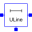
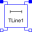

LinesLossy and lossless segmented transmission lines, and LC distributed line models |
|
Package Contents
|
Lossy Transmission Line |
|
|
Multiple OLine |
|
|  |
Lossy RC Line |
|  |
Lossless transmission line with characteristic impedance Z0 and transmission delay TD |
|
Lossless transmission line with characteristic impedance Z0, frequency F and normalized length NL |
|
|
Lossless transmission line with characteristic impedance Z0 and frequency F |
Information
This information is part of the Modelica Standard Library maintained by the Modelica Association.
This package contains lossy and lossless segmented transmission lines, and LC distributed line models. The line models do not yet possess a conditional heating port.